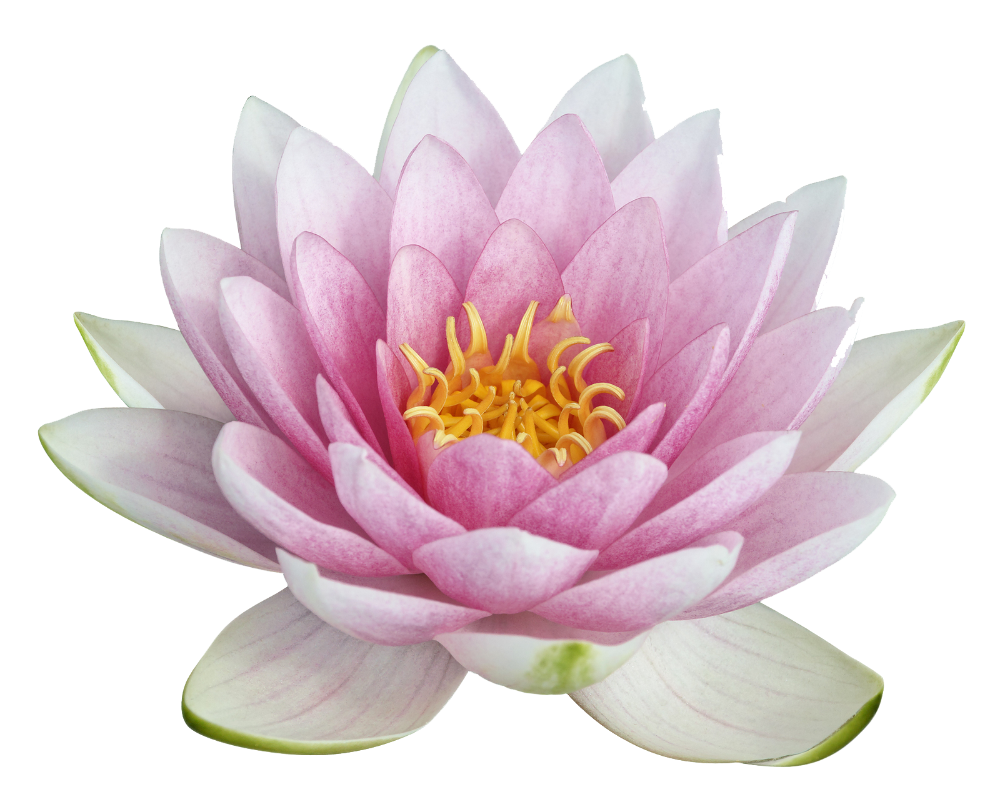

Así como te admiro de lejos,
te diré a través de este poema lo que siento:
tus hermosos destellos, como madera al sol,
tu fascinante seda, cual melena de león.
Esas líneas oscura como trazos firmes de un pincel,
esos abanicos curvos sobre tu mirada incandescente,
ese perfecto perfil que divide el cielo de tu cara,
y esos pétalos de color carmín que el alma me calma.
Me hacen perder la cordura, ¿y que más da?,
pues quisiera perderme en tu dulce mirar.
Eres perfecta frescura y es la única verdad
esa que provoca en mi cuerpo un suave temblar.
Ojeras bajo tus destellos se hacen notar,
y también tus pecas cerca esa curva suave,
pues me hacen pensar que tienen la llave
para por fin poderte alcanzar.
Un lunar como una peca de noche,
piel tejida como si fuese algodón;
tu belleza natural es un derroche,
es la calma que envuelve a mi corazón.
BELLEZA NATURAL
